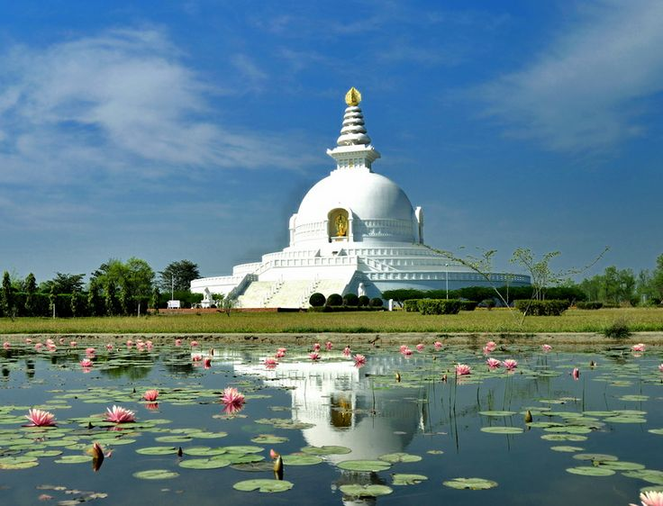
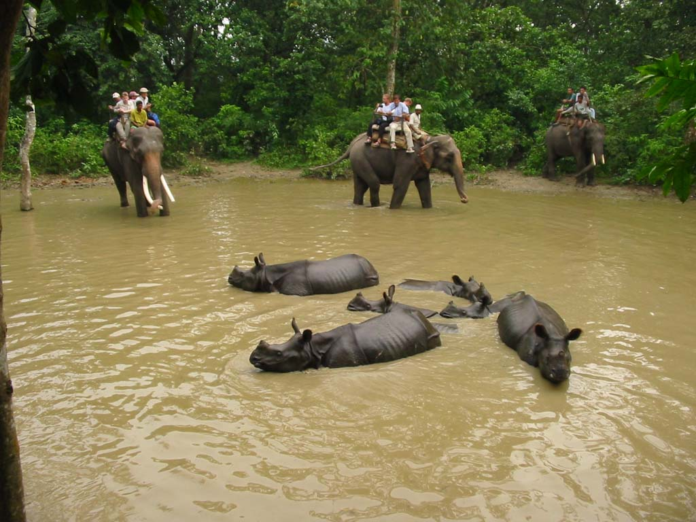

Our journey starts from Butwal which is city close to Lumbini, the birth-place of Lord-Gautama Buddha. We first went to site where his palace used to be. The site was really nice and peaceful. A lot of intermatimal organization supporting historical places as well as organization supporting buddhism could be seen in that area. After site seeing of the place, we entered the Lumbini heritage area where there were numbers of monasteries and temple. Most of the temples were built by foreign countries and they were amazing.
During the walk in our heritage site, we saw a lot of pilgrimages from different parts of the world. most of the people there were Asian. There was a big crowd of people near Maya Devi Temple. Lumbini was declared to be the birthplace of Buddha after inscription found in Ashoka Pillar which was built by great emperor Ashoka of India. It is believed that Hindu King Ashoka left India and came to Nepal and lived rest of his life in being Buddshist in the birthplace of Buddha.
Then we went to Chitwan National Park. This World Heritage listed reserve protects more than 932 sq km of forests, marshland and grassland containing sizeable animal populations, making it one of the best national parks for viewing wildlife in Asia. You'll have an excellent chance of spotting one-horned rhinos, deer, monkeys and some of the more than 500 species of birds. If you are extremely lucky, you may spot a leopard, wild elephant or sloth bear though it is the once-in-a-lifetime chance to spot a majestic royal Bengal tiger that is the premier attraction. You'll also have the chance to experience domesticated elephants, although how that interaction takes place is now undergoing a paradigm shift driven by animal rights concerns. There is a daily admission fee that is normally bundled into the overall cost of a tour. But, the tour was not expensive with $50 we were given jungle safari and whole day guide as well as elephant ride in Jungle.
After staying in Chitwan for few days we went on our way to the Annapurna circuit. This circuit is considered one of the best treks in the world though road construction is threatening its reputation and its future as a classic trek. Yet no one disputes that the the scenery is outstanding: 17 to 21 days long, this trek takes you through distinct regional scenery of rivers, flora, fauna and above all - mountains.